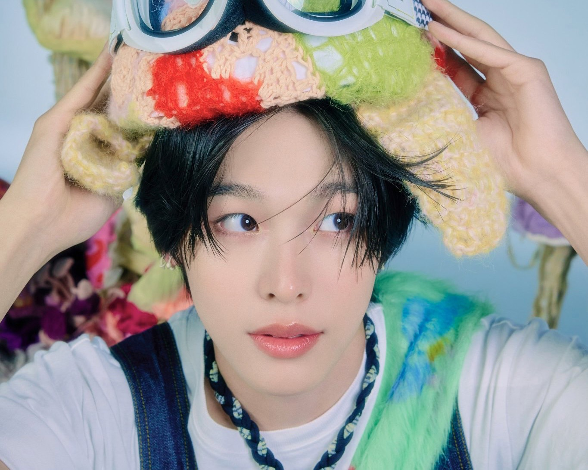

Main rapper
在[NCT Universe : LASTART]中，BoA前輩表示Riku的聲音很有魅力，饒舌時的語氣很新鮮，是他以前從未在SM公司裡聽過的語調。出道後主要負責歌曲饒舌的部分，偶爾有一些唱段；以風格特殊、SM從未有過的饒舌語調深受粉絲喜愛。
↗ 請點擊觀看[NCT Universe : LASTART] 리쿠 & 류 'FIRE' 무대

Vocal
雖然定位是饒舌，但其實RIKU的唱歌技巧也很棒，Tears are falling就展現出他柔和的聲線。
↗ 請點擊觀看'Tears Are Falling (Korean Ver.)' Summer Movie
而今年冬季專輯WISHFUL的主打曲-WISHFUL Winter 再次展現了柔和優美的歌聲，證明了RIKU不僅能rap也能vocal。
↗ 請點擊觀看'WISHFUL Winter' MVLead dancer
未出道時就在舞蹈學院學習了兩年的舞蹈，基礎打得很好，也在選秀上展現出了他的舞蹈實力，被導師認可。
這段時間為他的舞蹈表演奠定了扎實的基礎。出道後掌握了更多種舞蹈技巧，培養出了出色的肢體協調能力和舞台表現力。
↗ 請點擊觀看[NCT Universe : LASTART]